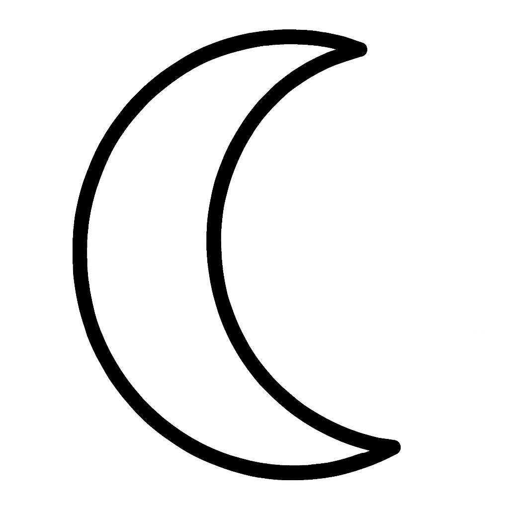
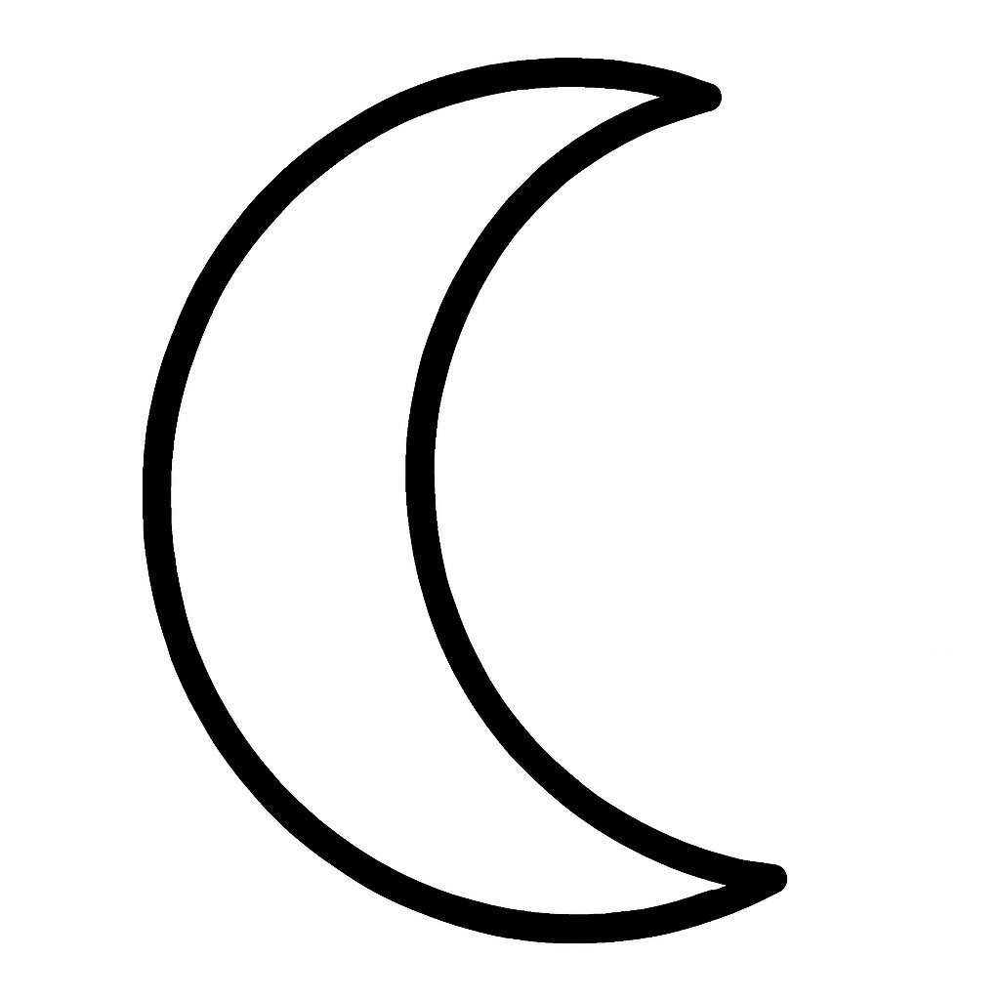
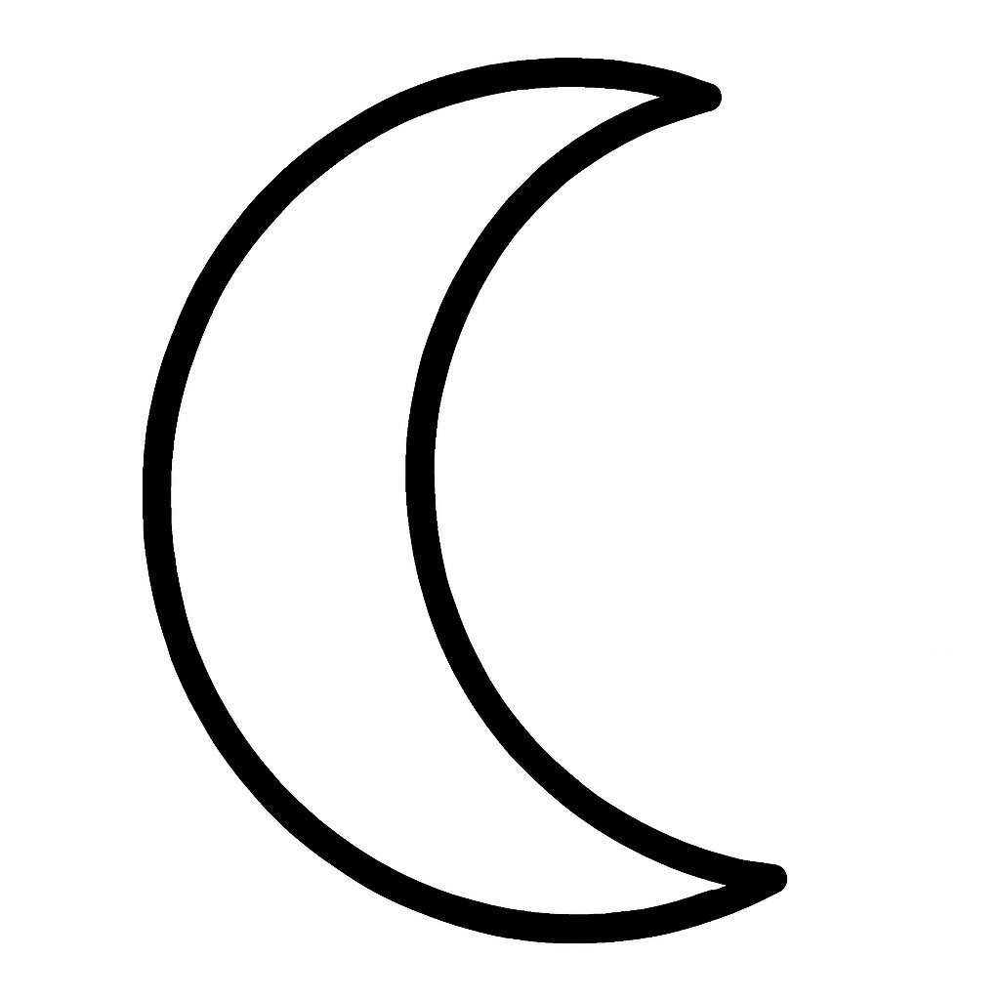

A crescent form —
waxing, waning, always watching.
waxing, waning, always watching.
Moon
Brought to you by SanSymeon & ChatGPT
Drawn by One. Remembered by Many.
Welcome to Different Strokes:
A unique way of learning Kanji stroke orders
While watching, trace the character on your palm.
Introducing 月 – (tsuki) “moon”
